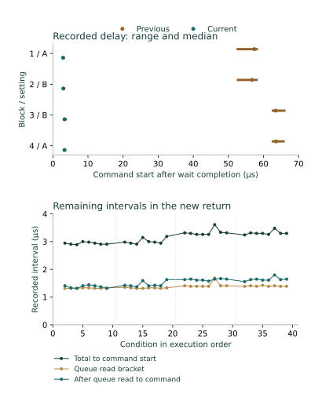

Question and rationale
The preceding acquisition ended its deadline wait within 0.704 µs of the target, but the continuous command-access start followed 52.685–65.944 µs later. Report initialization, parameter preparation and admission occupied that interval. Three of sixteen quiet/observed command-delay pairs did not overlap.
This investigation moves acquisition preparation before waiting, retains fresh admission after the wait, and records the intermediate counters. The question is whether the resulting path reduces command delay and variation while retaining the same acquisition conditions. Predictable timing supports coordination of physical state establishment and observation toward Seigsit creation and transfer.
Method
Retain the preceding forty-condition schedule: divider A=0x00ffff00 and B=0x00dfff00 in A–B–B–A order. Requested write-relative delays are 1,640 and 2,296 µs at A, and 1,435 and 2,009 µs at B. Sixteen continuous conditions are quiet and sixteen observe queue changes; four no-command and four single-command conditions provide controls. Blocks 1 and 3 use quiet/observed/observed/quiet at each delay; blocks 2 and 4 reverse the complete ten-condition order.
Each condition acquires a four-millisecond reference, stops, requires readiness and drains locally to empty. The intervention reads converter control, waits 200 µs, performs one guarded write of the selected unchanged divider, and requires matching divider, readiness and empty/error-clear queue. The deadline is the recorded end of that write access plus the requested interval rounded upward to counter ticks.
The new path clears and prepares the acquisition report before waiting. A deadline already reached at preparation completion refuses the acquisition. After a counter-only wait, a freshly bracketed FCS read must equal 0x105; the shared command operation retains its fresh converter-control guard. The four-millisecond acquisition, stop, readiness, local recovery, stopped check and final restoration retain their preceding definitions. No SD persistence occurs between the reference and stopped acquisition; neither window consumes queue entries.
Assessment criteria
First require complete recording, admitted settings and guards, correct deadlines and counter order, performed unchanged-value divider writes, accepted recovery, zero/one-entry controls and restoration. Compare delay distributions and each adjacent quiet/observed pair. Timing improvement and model agreement are outcomes, not execution-admission requirements. The frozen protocol specifies alternative outcomes and failure behavior.
Preparation and implementation
Candidate 18069CCCA98C adds literal SEIGRASM entries at bytes 3960 and 4436, retaining the preceding instruction bytes and reusing the command/observation/stop/readiness body. The 4,696-octet RP1 stream moves to an 8,192-octet region at 0x88000. All seven other streams retain their bytes and placement.
The enclosing report remains 450 cells. Header cell 19 marks preparation before waiting; cells 7–8 retain wait start/end. The acquisition report uses its previously unused cells 146–149 for preparation start/completion and the initial FCS read bracket. A missed deadline returns acquisition status 9 and coordinator status 5 without a queue read or command.
All 66 image-bound execution checks passed, and both SD readbacks matched. The declared procedure was three minutes. PC tools package literal opcodes and decode evidence. Existing ROM/EEPROM loading, AArch64 execution and counter, SD transport, PCIe/RP1 interfaces, retained bridge configuration and component state remain apparatus dependencies. Acquisition invokes no firmware service.
Results
All 2,969 records, 277 operations and forty conditions completed with accepted execution. No deadline was missed and no admission guard failed. Every condition recorded its unchanged-value divider write and matching immediate readback.
Continuous command-access start followed wait completion by 2.889–3.611 µs, with median 3.213 µs. The preceding range was 52.685–65.944 µs, with median 60.398 µs. The median decreased by 94.7%, and the range width decreased from 13.259 to 0.722 µs. These are measured counter intervals across two boots with different implementations.
| Block | Previous | Prepared |
|---|---|---|
| 1 / A | 52.685 / 57.407 / 58.093 | 2.889 / 2.926 / 3.000 |
| 2 / B | 52.722 / 56.694 / 58.056 | 2.907 / 2.981 / 3.185 |
| 3 / B | 62.704 / 63.454 / 65.944 | 3.259 / 3.306 / 3.611 |
| 4 / A | 62.704 / 63.556 / 65.722 | 3.241 / 3.296 / 3.481 |
All sixteen adjacent quiet/observed command-delay intervals overlapped, compared with thirteen previously. All sixteen pairs agreed in recovered count. Interval overlap means the recorded bounds are compatible; it does not establish identical command instants.

Where the remaining interval occurs
Report preparation lasted 1,823–2,338 ticks (33.759–43.296 µs) and completed before the deadline in every condition. The counter wait overshot by 0–40 ticks, at most 0.741 µs. The recorded frequency was 54 MHz throughout.
| Interval | Ticks | µs |
|---|---|---|
| Wait end to initial queue-read bracket | 11–16 | 0.204–0.296 |
| Initial queue-read bracket | 71–91 | 1.315–1.685 |
| Queue-read end to command-access start | 71–97 | 1.315–1.796 |
| Command access itself | 88–109 | 1.630–2.019 |
The first three intervals sum to the residual delay in each individual record; their separate extrema need not belong to the same condition. The command-access bracket includes its control guard, write and immediate readback. Relative to the divider-write bracket, the actual command-delay bounds exceed the requested delay by 2.907–7.796 µs. This larger bound includes both access uncertainties and wait overshoot.
Later blocks still have slightly larger residual intervals. Their cause is not identified. The new preparation duration cannot be subtracted directly from the old delay to attribute a precise cost to report clearing: instruction ordering, instrumentation, placement and boot conditions changed together.
Arrival behavior, controls and restoration
All 32 continuous counts again matched the conditional recurring-arrival model: A retained three entries at either delay; B retained three at 1,435 µs and four at 2,009 µs. Every observed continuous first-arrival bracket was compatible with the second interval from the divider-write bracket. None matched continuation from the older reference-arrival bracket. Quiet windows supply recovered counts without arrival timestamps.
All four no-command controls recovered zero entries; all four single-command controls recovered one. All eighty local and post-acquisition recoveries ended empty without queue error or reported sample error. Across reference and acquisition recoveries, 235 raw codes ranged from 846 to 863. These are uncalibrated observations. Cleanup recovered no remaining entries and restored converter control to zero, FCS to 0x100, divider to zero and clock control to zero.
The coordinator interval was 116.549447 seconds, excluding loader time and the final record's write/readback. Actual powered duration and boot count were not separately reported.
Interpretation and next investigation
Inference: placing acquisition preparation before waiting substantially improves realized command timing under these conditions while preserving the observed counts, guards and recovery. The result supports the new execution path as a more precise local timing capability. It does not isolate one instruction's physical cost, establish repeatability of this exact implementation across boots, or expose internal conversion instants.
The two tested delays lie well inside their modeled intervals. A useful next investigation is the arrival boundary itself: derive a prospective boundary from each recorded reference period and the divider-write bracket, then place guarded commands on both sides. Retain the new timing diagnostics, quiet/observed comparisons and controls. Classify a command as before, after or unresolved using the complete recorded bounds, rather than only its requested offset. Compare recovered counts and observed first arrivals across that boundary. This would challenge the model where a change in command timing predicts a different admitted arrival.
Independent analog freshness, calibrated physical state establishment, component ownership and physical Seigsit creation/transfer remain open. These timing results provide one measured capability for that work, without establishing the complete relation.
Evidence and provenance
Two read-only 64 MiB captures agreed. Capture SHA-256: cd83b1e7d120913227b1306fac2798daaf61f74048907d7da41a138eb4505ba2. Prepared-image SHA-256: 23c8551eab13ba46bef36bf016dca0268119d2422cf321ad63b1f9fbdb85ebfa.
Independent reconstruction verifies sector identity, ordinal, senary fields, padding and integrity, unchanged unused reservations, all preparation/guard/deadline counters, conditional count bounds, first-arrival comparisons and all sixteen timing-pair overlaps. The partition table, geometry and both boot files were unchanged. Seven boot-volume sectors outside the journal differ, including a System Volume Information directory; their writer and timing are not established.